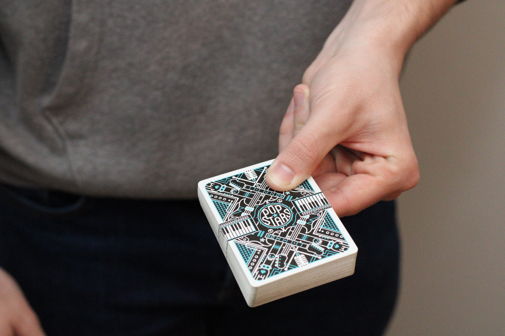
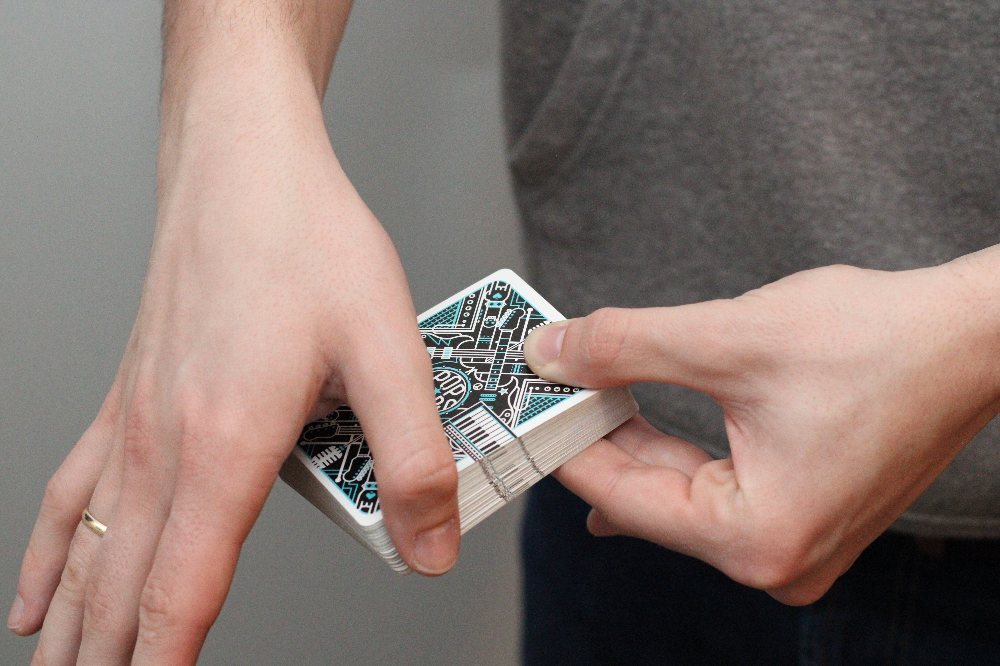
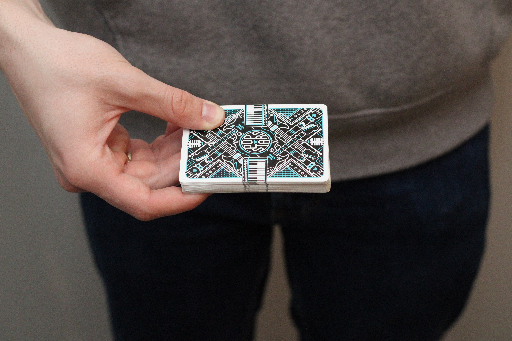
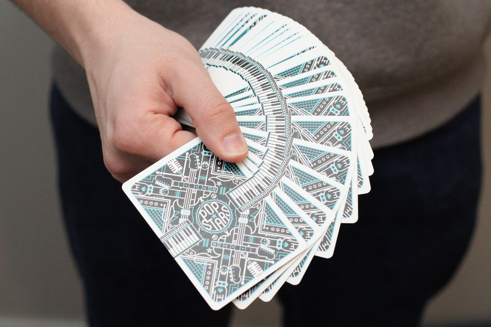
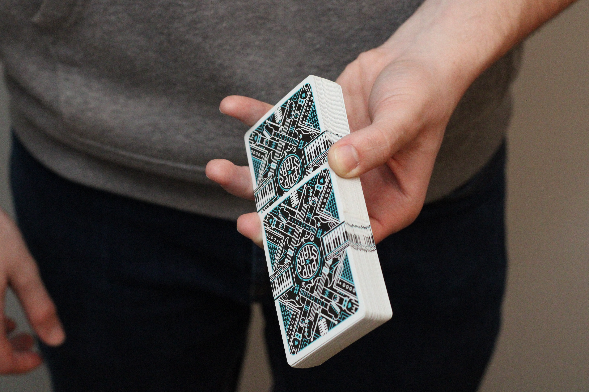
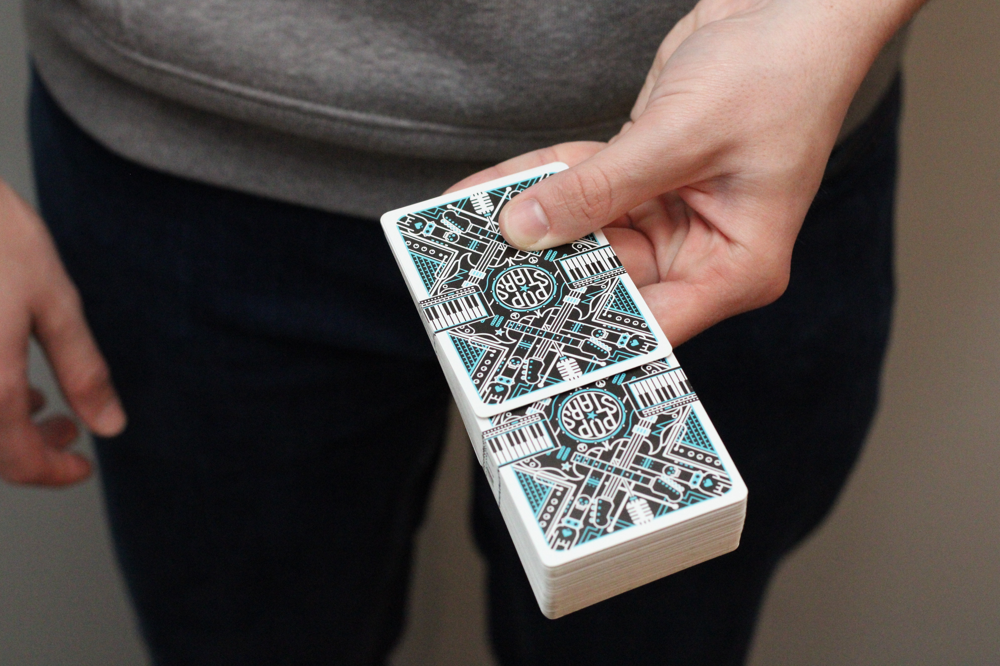

Fans are one of the fundamental techniques in cardistry, involving the skillful spreading of playing cards into a visually appealing display. Creating fans requires precision, control, and finesse, and they are often used to showcase the symmetry, design, and movement of the cards.
Hold the deck with your thumb on top of the deck, and your index and middle finger beside one another from the corner nearest to your palm. Apply slight pressure on the deck to ensure the cards don’t move too freely.
Using your other hand, place your thumb near the top of the long side closest to your hand holding the deck.
Tip: Only place your thumb roughly halfway down the stack to let the cards display properly.
With your hands in position, bring your thumb toward you while holding part of the packet. This should result in the fan effect.
Hold the deck with the short side facing toward your palm with either hand. Place your thumb near the long side closest to you on top of the deck, with your other fingers spread along the bottom side of the deck.
Applying slight downward pressure, push your thumb forward as far as naturally possible, bringing the cards with you. This should spread the cards out in a fan shape.
It is important to practice this fan with both hands to improve your handling of the cards.
The Giant Fan is a display trick that can be performed by combining the skills learned from the Thumb Fan and the Faro Shuffle.
Following the steps from the Shuffles page, Faro Shuffle the cards together so that two halves are intertwined and overlap roughly two centimeters.
Next, apply the technique used in the Thumb Fan, to fan out the interweaved deck.
Once you've mastered some basic fans, you can experiment with different variations, such as spreading the cards in different directions or creating multiple fans simultaneously. Fans can be incorporated into various cardistry routines and sequences, adding visual interest and flair to your performances. With practice and patience, you'll be able to create stunning fans that will impress and delight your audience.